Matplotlib vs. Seaborn¶
Visualizing your data makes it easier for people to understand it. Visualization helps in the analysis of datasets and the extraction of insights. Matplotlib and Seaborn are complete toolkits for producing static, animated, and interactive visualizations in Python.
Seaborn is more comfortable handling Pandas data frames and uses basic methods to provide beautiful graphics in Python.
Matplotlib works efficiently with data frames and arrays, treats figures and axes as objects, and contains various stateful APIs for plotting.
In this article, we learn step by step how we can plot and label the graphs in Matplotlib and Seaborn. Moreover, we will also compare various plots using Seaborn and Matplolib modules.
We assume you have a basic idea of Python visualization and Jupyter notebook. If you haven’t installed Jupyter notebook yet, we highly recommend installing it on your system since the implementation part in the article will be in using it.
Comparing Matplotlib and Seaborn¶
The two most important data visualization libraries in Python are Matplotlib and Seaborn.
Matplotlib is a Python library used to plot various graphs with the help of additional libraries like Numpy and Pandas. It is an effective Python tool for data visualization and is mainly used to plot 2D graphs of arrays. Moreover, it also uses Pyplot to offer a free and open-source MATLAB-like interface. It can work with different operating systems and their graphical front ends.
Seaborn is also a Python library that utilizes Matplotlib, Pandas, and Numpy to plot graphs. It is a superset of the Matplotlib library and is constructed on top of it. It helps in the visualization of univariate and bivariate data. Moreover, you can use it to create static Time-Series data graphs.
The following table compares the Matplotlib and Seaborn modules:
| Matplotlib | Seaborn |
| Matplotlib creates simple graphs, including bar graphs, histograms, pie charts, scatter plots, lines, and other visual representations of data. | There are numerous patterns and graphs for data visualization in Seaborn. It employs engaging themes, and it helps in the integration of all data into a single plot. Additionally, it offers data distribution. |
| It utilizes syntax that is relatively complicated and extensive. Example: Matplotlib.pyplot.bar(x-axis, y-axis) is the syntax for a bar graph. | It has relatively simple syntax, making it simpler to learn and comprehend. Example: seaborn.barplot(x axis, y-axis) syntax for a bar graph. |
| We can open and work with many figures at once. You can close the current figure using the syntax matplotlib.pyplot.close(). Close all the figures using this syntax: matplotlib.pyplot.close("all") | Seaborn sets the time for the creation of each figure. However, it may lead to (OOM) memory issues. |
| Matplotlib is a Python graphics package for data visualization and integrates nicely with Numpy and Pandas. Similar capabilities and syntax are available in Pyplot as in MATLAB, and users of MATLAB can readily understand it. | Seaborn is more comfortable with Pandas data frames. It utilizes simple sets of techniques to produce lovely images in Python. |
| Matplotlib is highly customized and robust. | With the help of its default themes, Seaborn prevents overlapping plots. |
| Matplotlib plots various graphs using Pandas and Numpy. | Seaborn is the extended version of Matplotlib, which uses Matplotlib, Numpy, and Pandas to plot graphs. |
Matplotlib vs. Seaborn
Basic Plots in Matplotlib vs. Seaborn¶
We will directly jump into the practical part and create basic plots using Matplotlib and Seaborn modules. Before going to the implementation part, ensure that you have installed Matplotlib and Seaborn modules on your system.
You can use the pip command to install the modules:
# installing the required modules
pip install matplotlib==3.6.0
pip install seaborn==0.12.0
We’ve shown how to install both tools above if you want to install matplotlib independently. However, strictly speaking, we could have gotten away with installing just Seaborn, because it includes Matplotlib as a dependency.
To check whether the installation has been successful, run the following code, showing the installed versions of modules.
# importing the modules
import matplotlib
import seaborn
# printing the versions
print("Matplotlib :", matplotlib.__version__)
print("Seaborn :", seaborn.__version__)
Output:
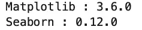
As you can see, I have 3.6.0 and 0.12.0 versions of Matplotlib and Seaborn, respectively.
Scatter Plots¶
A scatter plot is a graph in which the values of two variables are plotted along two axes, the pattern of the resulting points revealing any correlation present.
Before plotting the scatter plot using Maplotlib and Seaborn, let us first load the dataset. In this tutorial, we will be using the iris dataset. We’ll use seaborn’s built-in dataset to do this.
# importing required modules
import pandas as pd
import numpy as np
# loading the dataset
dataset = seaborn.load_dataset('iris')
dataset.columns = ["sepal length (cm)", "sepal width (cm)", "petal length (cm)", "petal width (cm)", "species"]
# heading of the dataset
dataset.head()
Output:
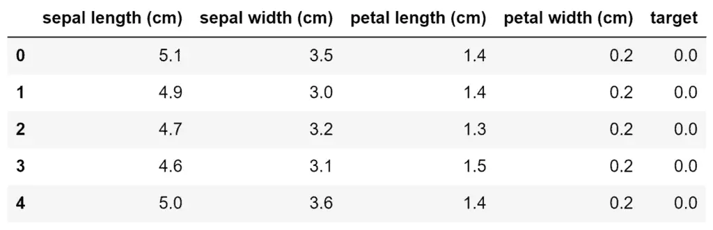
As you can see, the dataset contains information about different types of flowers.
Plotting scatter plots in the Maplotlib module is very easy. We need to specify the values on the x-axis and the y-axis and call the scatter() function.
# importing the module
import matplotlib.pyplot as plt
# dataset for axes
x_axis = dataset['petal length (cm)']
y_axis = dataset['petal width (cm)']
# plotting simple scattered plot
plt.scatter(x_axis, y_axis)
plt.show()
The example below shows how we can plot them using the Matplolib module:
Output:
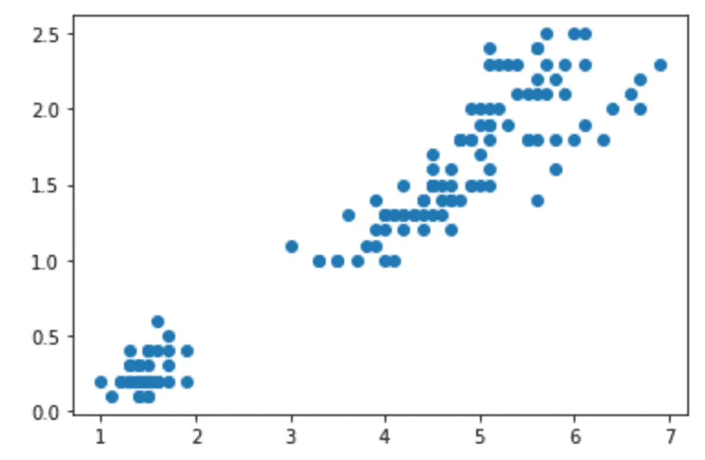
As you can see, this scatter plot is pretty basic. In fact, it’s the simplest version of the scatter plot, so let’s improve it by adding labeling and a title, and changing the plot’s color.
# importing the module
import matplotlib.pyplot as plt
# dataset for axes
x_axis = dataset['petal length (cm)']
y_axis = dataset['petal width (cm)']
# labeling the axis
plt.xlabel("Petal length")
plt.ylabel("Petal width")
# putting the title
plt.title("Petal length vs petal width")
# plotting simple scattered plot
plt.scatter(x_axis, y_axis, c='m')
plt.show()
Output:
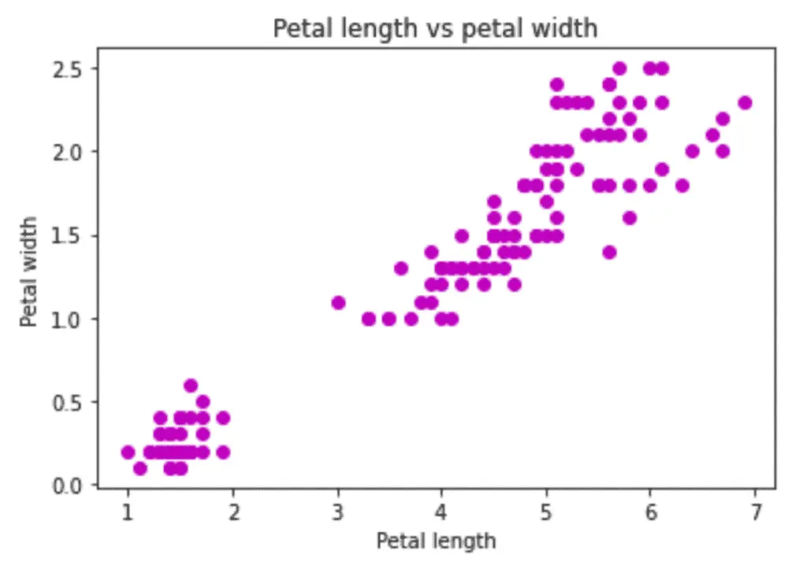
As you can see, our plot is much better this time as we have added titles and labels. But we can make the plot even better by plotting the data points of each flower species in different colors.
For example, see the python program below:
# setting the color of the plot
colors = {'setosa': 'b', 'versicolor': 'g', 'virginica': 'r'}
# creating the subplots
fig, ax = plt.subplots()
# plot each data-point
for i in range(len(dataset['petal length (cm)'])):
# plotting different classes with different color
ax.scatter(dataset['petal length (cm)'][i], dataset['petal width (cm)'][i],color=colors[dataset['species'][i]])
Output:
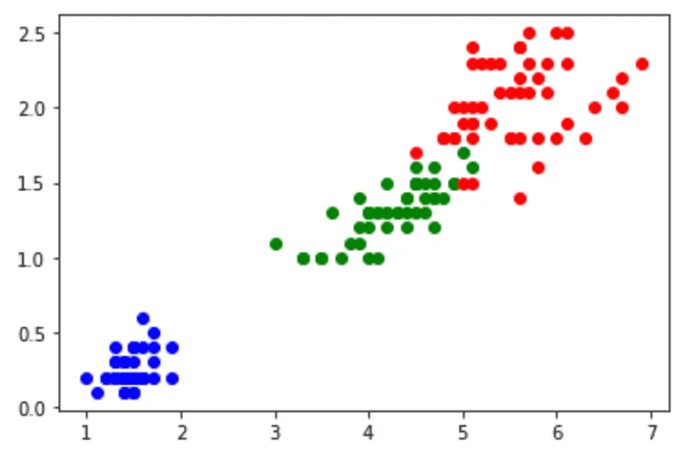
We can achieve the same plot in Seborn with just one line of code. The scatterplot() function in seaborn is used to plot the scatter plot.
# importing the module
import seaborn as sns
# plotting the scatter plot in seaborn
sns.scatterplot(x=x_axis, y=y_axis, hue=dataset.species, s=90)
Output:
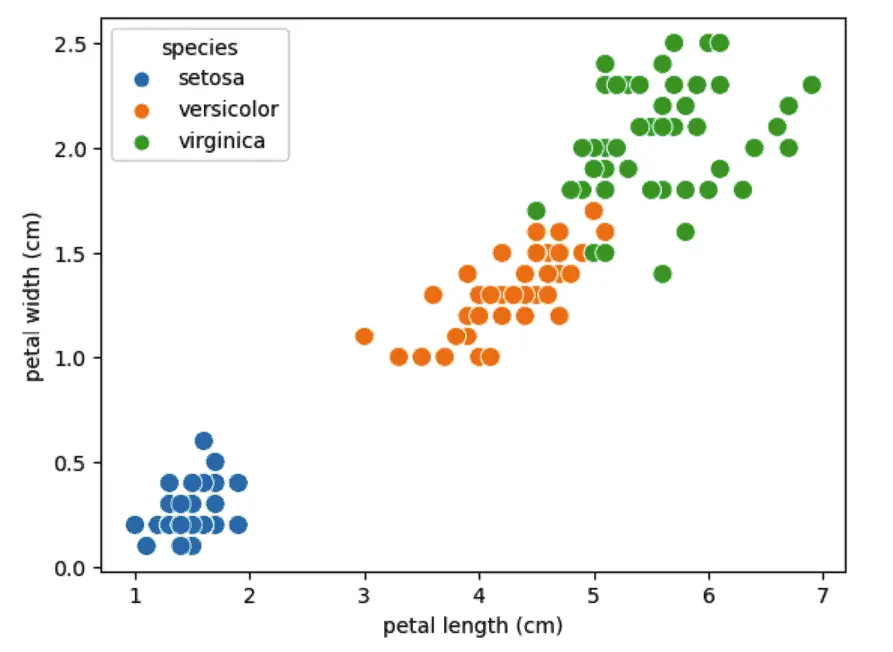
As you can see, in Seaborn, we don’t need to specify the labeling or the legend, which is done by default for some plots.
Line Graphs¶
A line chart displays the evolution of one or several numeric variables and is one of the most common chart types for time series and regression datasets.
Plotting line charts in the Maplotlib model is very easy. The plot() method is used to plot line charts. Let us plot a line chart of petal length(cm) from the dataset:
# line plot in matplotlib
plt.plot([i for i in range(len(dataset))],dataset['petal length (cm)'],marker='o')
# labeling the axis
plt.xlabel("values")
plt.ylabel("Petal Length")
# putting the title
plt.title("petal Length")
# plt.show
plt.show()
Output:
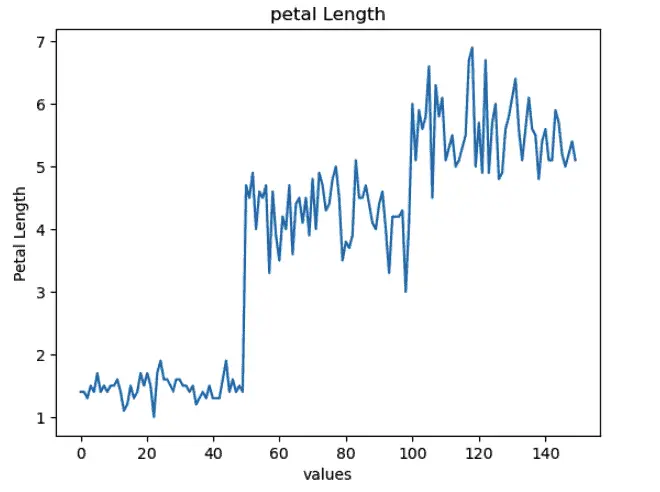
The line plot connects the adjacent data points using a line. The marker parameter in Matplotlib is used to highlight the data points as shown below:
# line plot in matplotlib
plt.plot([i for i in range(len(dataset))],dataset['petal length (cm)'],marker='o')
# labeling the axis
plt.xlabel("values")
plt.ylabel("Petal Length")
# putting the title
plt.title("petal Length")
# plt.show
plt.show()
Output:
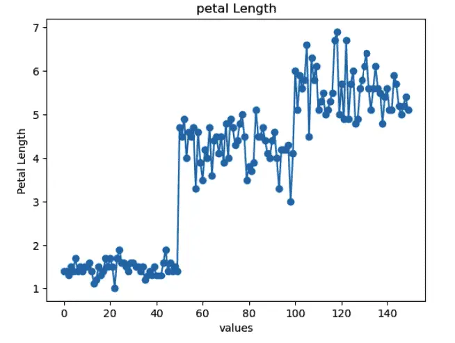
As shown above, the data points are indicated by blue dots and connected to the adjacent data point by a line.
Another powerful feature of line charts in Matplotlib is that we can plot multiple line charts in one plot. For example, we will plot each flower’s length and width using a line chart.
# dropping the species column
columns = dataset.columns.drop(['species'])
# create x data
x_data = range(0, dataset.shape[0])
# create figure and axis
fig, ax = plt.subplots()
# plot each column
for column in columns:
ax.plot(x_data, dataset[column])
Output:
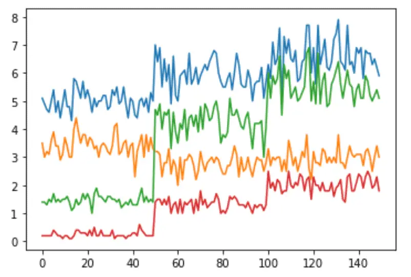
As shown above, the line chart represents each input class with different colors.
Once again, plotting line charts in Seaborn is much easier and we can do it with much less code. In Seaborn, the lineplot() method is used to plot line charts.
Let us plot a simple line chart of the length of petals using the Seaborn module:
# seaborn line chart
sns.lineplot(data=dataset, x=[i for i in range(len(dataset))], y=dataset['petal length (cm)'])
Output:
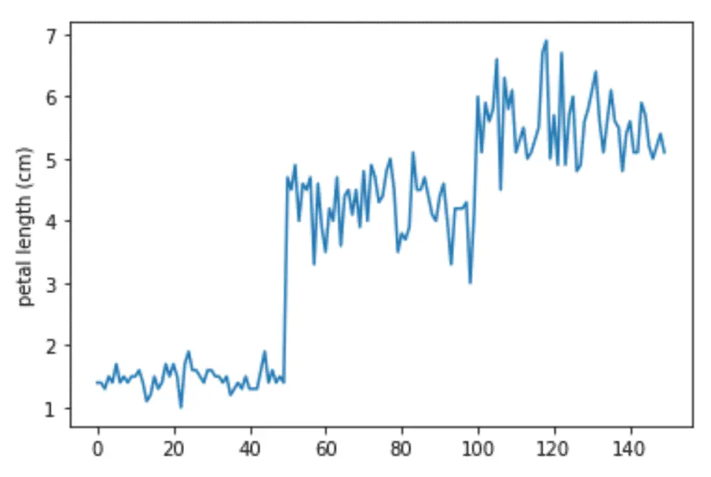
As you can see, only one line of code has plotted a line plot similar to the one we get using Matplolib.
One of the important parameters in Seaborn plotting is hue which is used to plot different classes with different colors.
For example, we can plot the line chart of different types of flowers with different colors as shown below:
# seaborn line chart
sns.lineplot(data=dataset, x=[i for i in range(len(dataset))], y=dataset['petal length (cm)'], hue=dataset['species'])
Output:
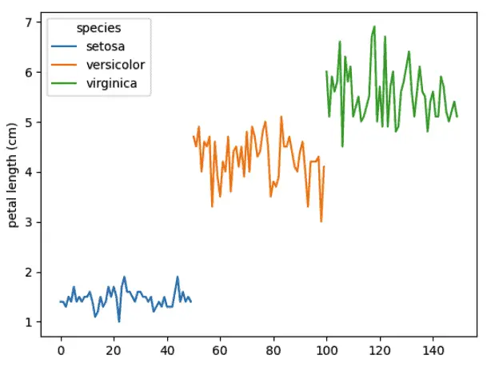
Because the output class in our dataset has three different output classes, we have three different colors of line charts. In addition, Seaborn added a legend for each of the species for us, based on the fact that we used that feature as the “hues” argument.
Another useful feature of the Seaborn module is that we can easily plot multiple line plots without using any for loop. We need to provide the whole dataset, which will automatically plot a line chart for each attribute.
# line plots
sns.lineplot(data=dataset)
Output:
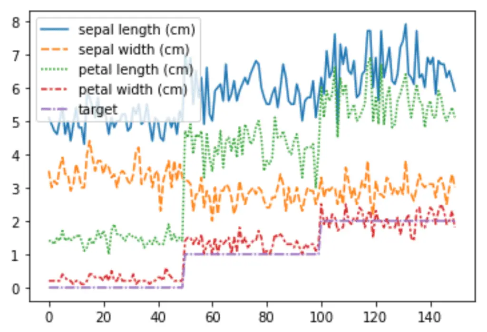
Histogram Plots¶
A histogram is a plot that lets us discover and show the underlying frequency distribution (shape) of a set of continuous data. This allows the inspection of the data for its underlying distribution (e.g., normal distribution), outliers, skewness, etc.
The hist() method in the Matplotlib module is used to plot a histogram of the dataset.
Let us plot a simple histogram of the petal lengths of the dataset:
# plotting histogram
plt.hist(dataset['petal length (cm)'], bins=15)
# showing plot
plt.show()
Output:
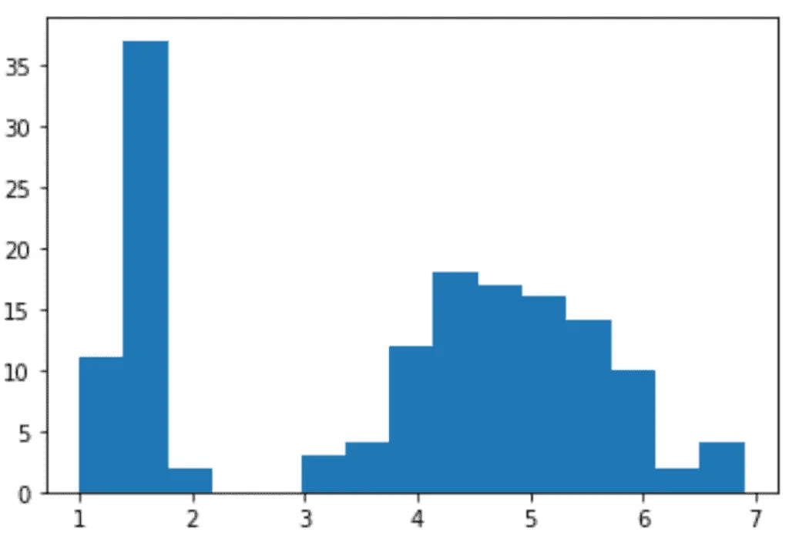
As you can see, we defined the bins to be 15 in the above program.
There can be various ways to plot histograms using Seaborn. However, we will use the simplest one.
We can use the “distplot” in Seaborn to plot the histogram as shown below:
# plotting histogram in seaborn
sns.displot(data=dataset, x='petal length (cm)', bins=10, kde=True)
Output:
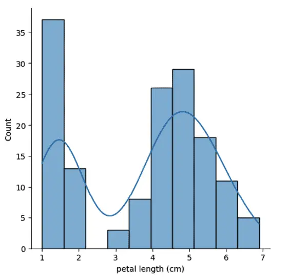
Box Plots¶
A box plot is a simple way of representing statistical data on a plot in which a rectangle is drawn to represent the second and third quartiles, usually with a vertical line inside to indicate the median value. The lower and upper quartiles are shown as horizontal lines on either side of the rectangle.
The boxplot() method in Matplotlib is used to plot box plots. Let us first plot the box plot for the length of petals:
# fixing the size
fig = plt.figure(figsize =(8, 6))
# Creating plot
plt.boxplot(dataset['petal length (cm)'])
# Data visualization using Python
plt.show()
Output:
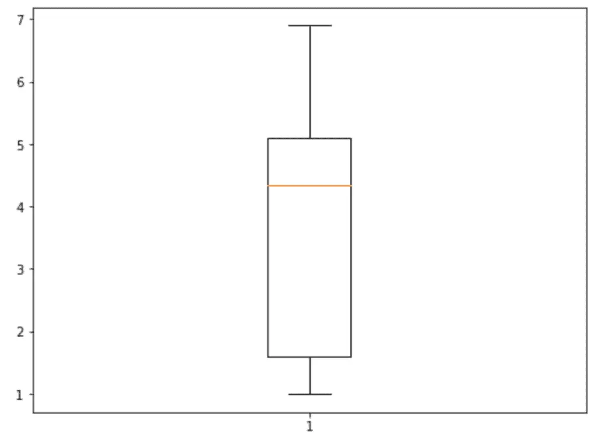
The box plot shows that the distribution of the length of petals in our dataset is skewed as the median line is pushed upward.
Another important feature of boxplot() in Matplotlib is that we can plot the box plot for multiple attributes on a graph, making it easier to compare multi-attributes.
# fixing the size
fig = plt.figure(figsize =(8, 6))
# Creating plot
plt.boxplot(dataset.drop('species', axis=1))
# Data visualization using Python
plt.show()
Output:
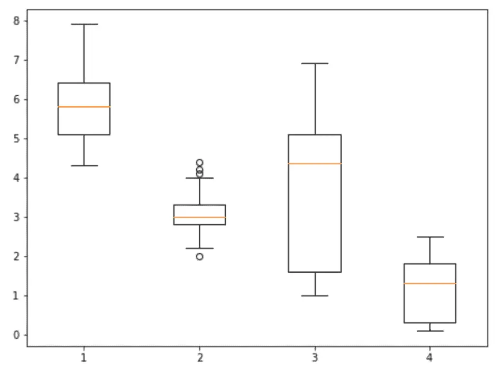
As you can see, the graph contains the box plots of the attributes of the iris dataset. The dot points in the above plot show the outliers.
The box plots in Seaborn are more beautiful and give more information. For example, we can plot box plots of each target class separately, which helps us understand the dataset’s distribution and the output classes separately.
Let’s plot the box plots of each output class based on petal length:
# plotting the boxplots
sns.boxplot(data=dataset, x='species', y='petal length (cm)')
Output:
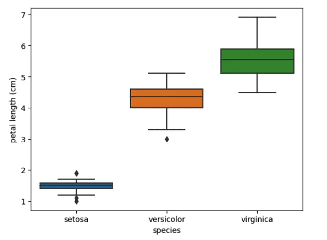
The above plots show the box plots of each species based on petal length. We can also plot the box plots for each input attribute as we did for Matplotlib using Seaborn.
# box plot using seaborn
sns.boxplot( data=dataset.drop('species', axis=1))
Output:
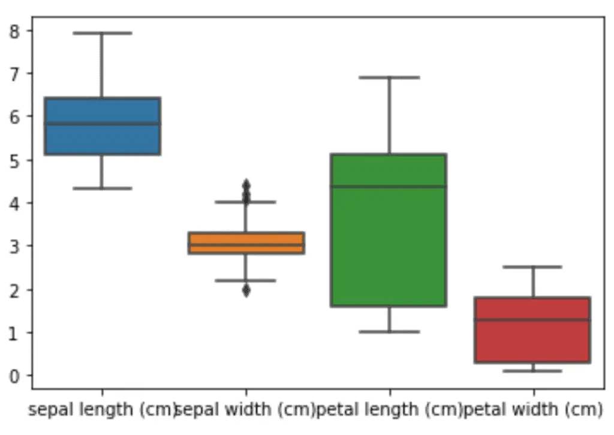
Violin Plots¶
Violin plots are similar to box plots, except that they also show the probability density of the data at different values. These plots include a marker for the median of the data and a box indicating the interquartile range, as in the standard box plots. Overlaid on this box plot is a kernel density estimation.
The violinplot() function in Matplotlib is used to plot violin plots.
Let us plot a simple violin plot of the length of petals in our dataset:
# Create a figure instance
fig = plt.figure()
# Create the boxplot
plt.violinplot(dataset['petal length (cm)'])
plt.show()
Output:
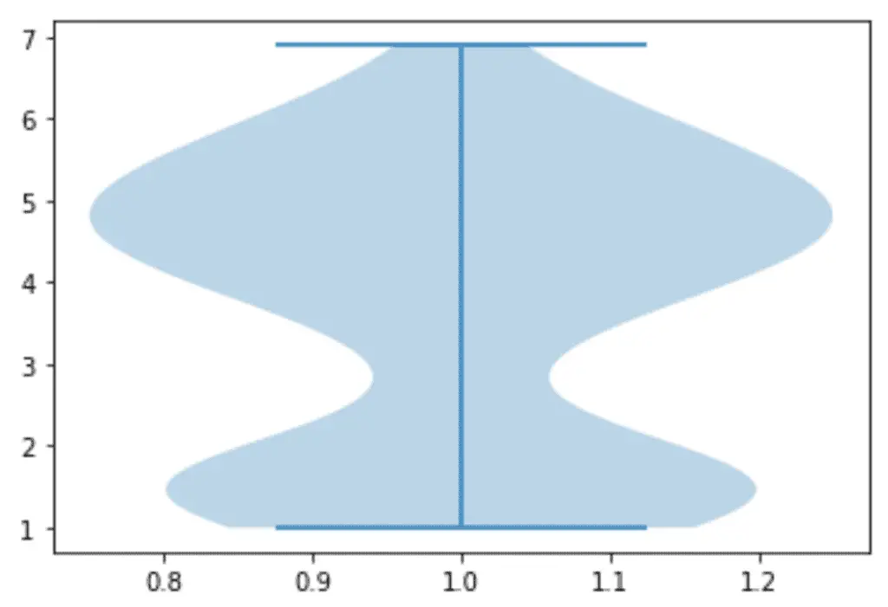
Another important feature of violinplot() is that we can plot multiple violin plots in one graph, making it easy to compare various datasets.
Let us now plot the violin plots of the multiple attributes from our dataset:
# Create a figure instance
fig = plt.figure()
data = [dataset['sepal width (cm)'],
dataset['sepal length (cm)'],
dataset['petal width (cm)'],
dataset['petal length (cm)']]
# Create an axes instance
ax = fig.add_axes([0,0,1,1])
# Create the boxplot
bp = ax.violinplot(data)
plt.show()
Output:
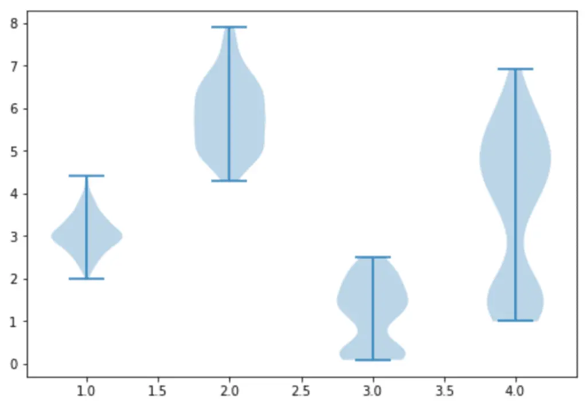
Similarly, we can plot violin plots in the Seaborn module as well. This time let us plot the violin plot of the length of petals from our dataset using the Seaborn module.
# violin plots
sns.violinplot(y=dataset["petal length (cm)"])
Output:
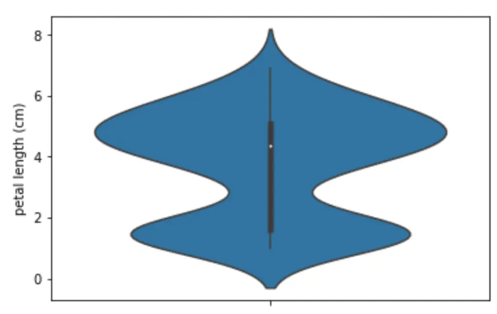
Another important feature of the violin plots of Seaborn is that we can plot the violin plots of each target variable separately, which helps us to understand the distribution of each output class.
Let us now plot the violin plots for each target variable based on petal length:
# violin plots for output classes
sns.violinplot(data=dataset, x="species", y ='petal length (cm)')
Output:
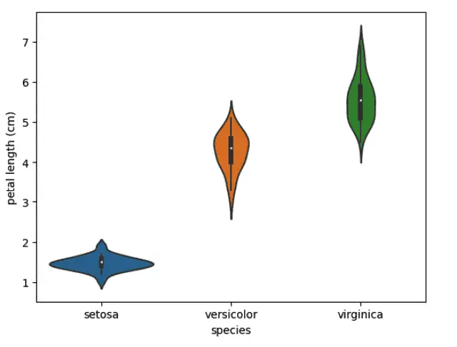
Bar Plots¶
A bar plot is a plot that presents categorical data with rectangular bars with lengths proportional to the values that they represent. A bar plot shows comparisons among discrete categories. One axis of the plot shows the specific categories being compared, and the other axis represents a measured value. The difference between a bar plot and a histogram plot is that a bar graph is the graphical representation of categorical data while a histogram is the visual representation of grouped data continuously.
The bar( ) method in Matplotlib creates a bar plot.
Let us plot a simple bar graph of the different types of flowers depending on your petals’ length:
# plotting
fig = plt.figure(figsize = (10, 5))
# Bar plot
plt.bar(dataset['target'], dataset['petal length (cm)'], color ='green',width = 0.8)
# labeling
plt.xlabel("Target")
plt.ylabel("Petal length")
plt.show()
Output:
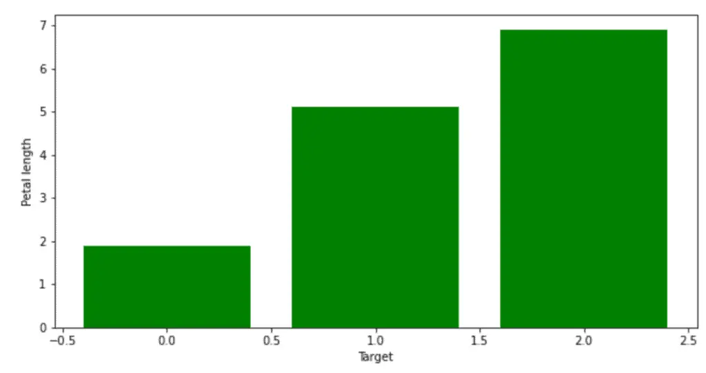
As you can see, we have created bar plots where each bar has a width of 0.8.
Another type of bar plot is an unstacked bar plot. It can be used to deduce some facts from the pattern we observe through the comparison. For example, when comparing several quantities and when one variable changes, we might want a bar chart with one color bar for each quantity value.
Let us create a bar chart for multi attributes of the data.
# initializing the plot
fig = plt.figure()
ax = fig.add_axes([0,0,1,1])
# Add a "target" column, map species an offset to support grouping ([0,1,2])
species = list(dataset.species.unique())
dataset['target'] = [species.index(x) for x in dataset.species]
# Plotting the graph for each of the species
ax.bar(dataset['target'] + 0.00, dataset['petal length (cm)'], color = 'b', width = 0.25)
ax.bar(dataset['target'] + 0.25, dataset["sepal length (cm)"], color = 'r', width = 0.25)
ax.bar(dataset['target'] + 0.50, dataset["petal width (cm)"], color = 'g', width = 0.25)
# adding legends
ax.legend(dataset.species.unique())
Output:
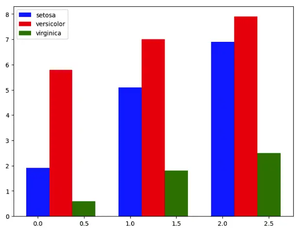
As you can see, it is easy to compare different input variables of the dataset depending on the target variable.
Another type of bar chart is the stacked bar. The stacked bar plots are the plots that represent different groups on top of each other. The height of the resulting bar shows the combined result of the groups.
Let us convert the same information displayed in the unstacked bar into a stacked bar plot:
# initialiazing the plot
fig = plt.figure()
ax = fig.add_axes([0,0,1,1])
# ploting stacked bar plots
ax.bar(dataset['species'], dataset['petal length (cm)'], width = 0.4, color='r')
ax.bar(dataset['species'], dataset['petal width (cm)'], width=0.4,bottom=dataset['petal length (cm)'], color='b')
ax.bar(dataset['species'], dataset['sepal width (cm)'], width=0.4,bottom=dataset['petal length (cm)']+dataset['petal width (cm)'], color='g')
# setting the x-asix
ax.set_xticks([0,1,2,])
plt.show()
Output:
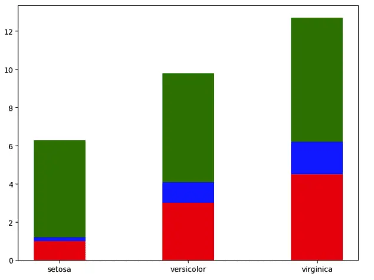
As you can see, the bars are stacked on top of each other.
Plotting bar charts in Seaborn is much easier than using the Matplotlib module. The barplot() method is used to plot bar charts.
Let us create a simple bar chart using the Seaborn module:
# bar plots in seaborn module
sns.barplot(data=dataset, x="species", y="petal length (cm)")
Output:
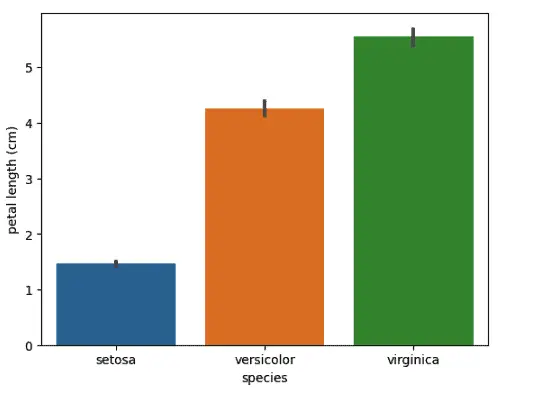
As you can see, just one line in the Seaborn module plots the bar chart with labels.
Creating Legends¶
Graph legends give meaning to the visualization of our data and provide title names for the different elements of the graph. As we’ve seen in the preceding examples, because our data is grouped by species, we were often able to get a reasonable legend with little work, especially when we used Seaborn.
This is not always the case, however, so this section will explore how to create various legends.
The simplest legend can be created with the plt.legend() command, which automatically creates a legend for all labeled graph elements:
x = np.linspace(0, 10, 100)
fig, ax = plt.subplots()
ax.plot(x, np.sin(x), '--m', label='Sine')
ax.plot(x, np.cos(x), '-c', label='Cosine')
ax.axis('equal')
leg = ax.legend()
Output:
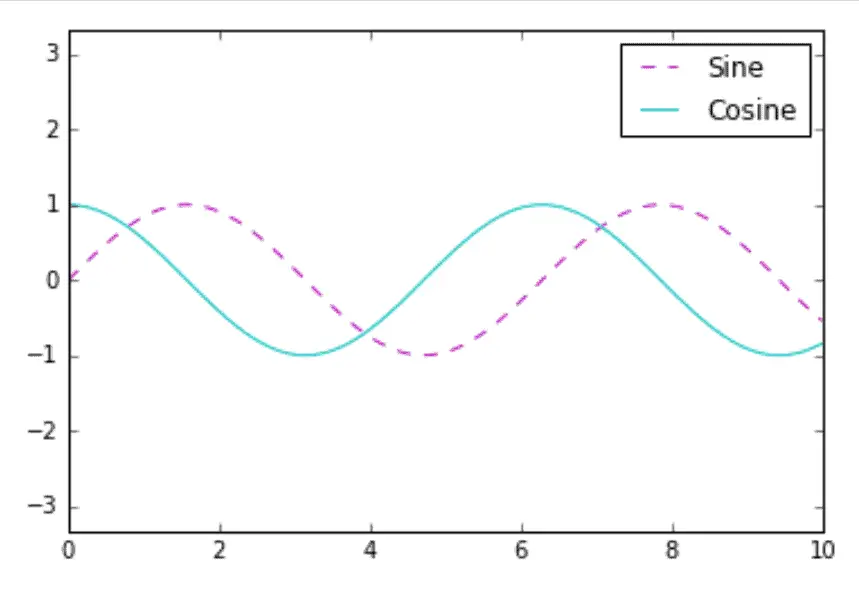
There are many ways to customize legends. For example, we can specify a location and remove the frame:
ax.legend(loc='upper left', frameon=False)
fig
Output:
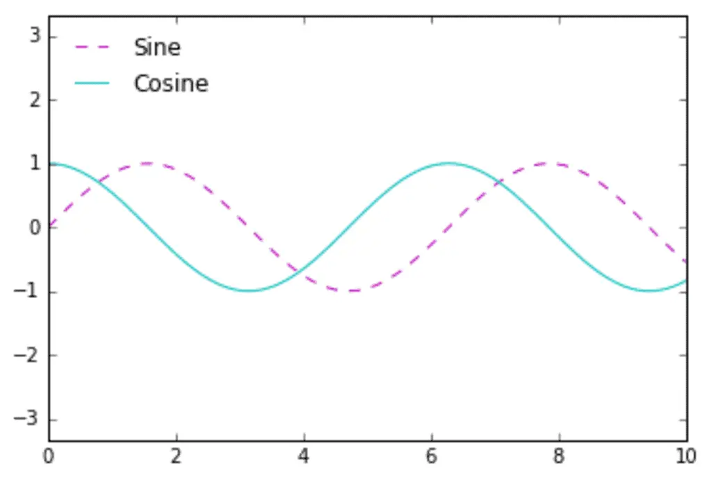
We can use the ncol command to specify the number of columns in the legend:
ax.legend(frameon=False, loc='lower center', ncol=2)
fig
Output:
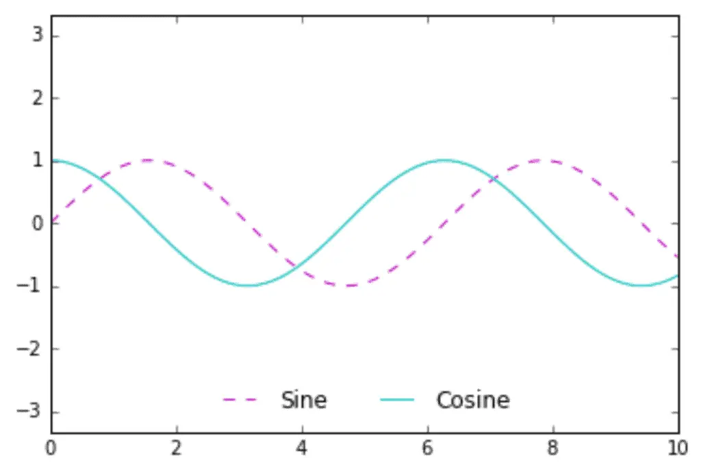
We can use a rounded frame or add a shadow, change the transparency of the frame or change the backing around the text:
ax.legend(fancybox=True, framealpha=1, shadow=True, borderpad=1)
fig
Output:
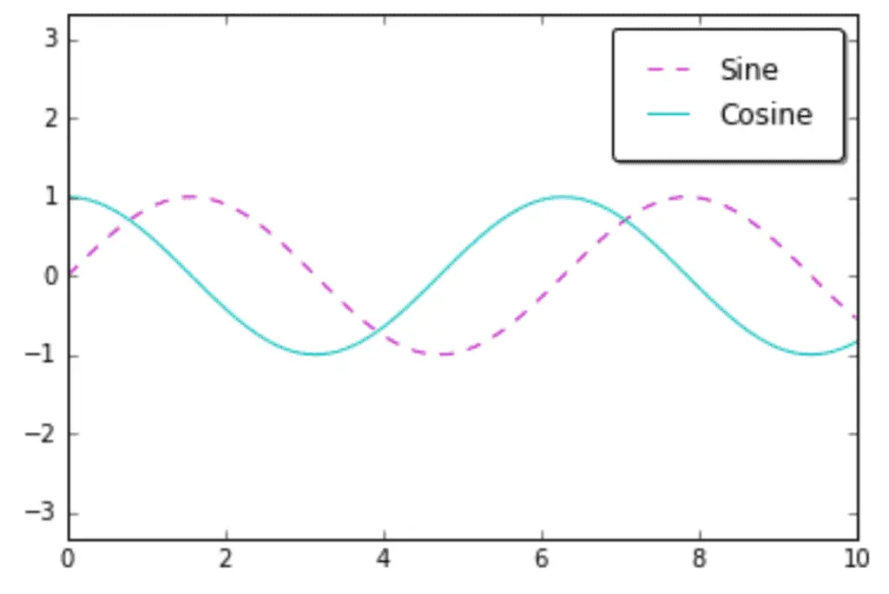
So we looked at adding legends and changing their location, frame, and line patterns.
Summary¶
Matplotlib is one solution for Python users who need to visualize their data to make essential statistical conclusions. It is a complete plotting helpful package for Python and NumPy users. On the other hand, Seaborn is also a Python data visualization library based on Matplotlib, and it provides a high-level interface for drawing attractive and informative statistical graphics.
Generally speaking, we’ve seen how Matplotlib allows you fine-grain control over settings, but often without a high-level interface that provides excellent default plots. In contrast, Seaborn often allows you to get a great-looking plot with significantly less code while still remaining highly configurable. Matplotlib is worth learning about since it forms the back end of so many plotting libraries, but for general data science work – especially if we’re using Pandas – Seaborn may be a better choice.
You Might Also Like¶
The companion Jupyter notebook for this repository is in the matplotlib-vs-seaborn directory of our Python Plot Examples repository.